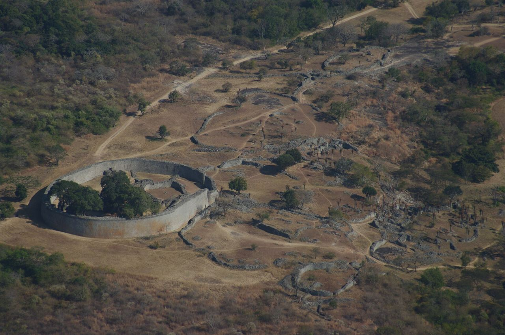
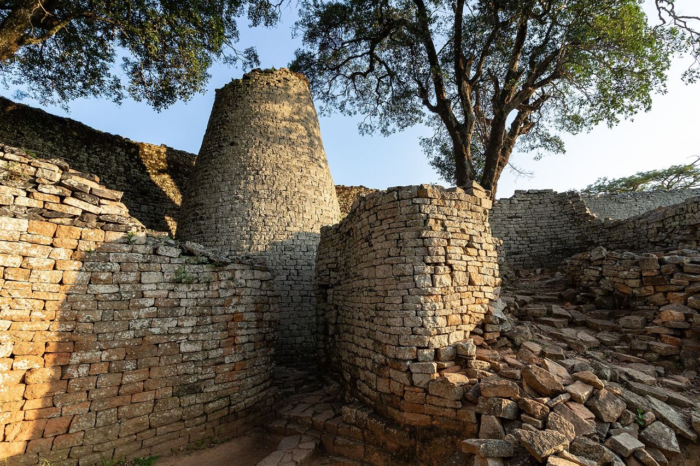
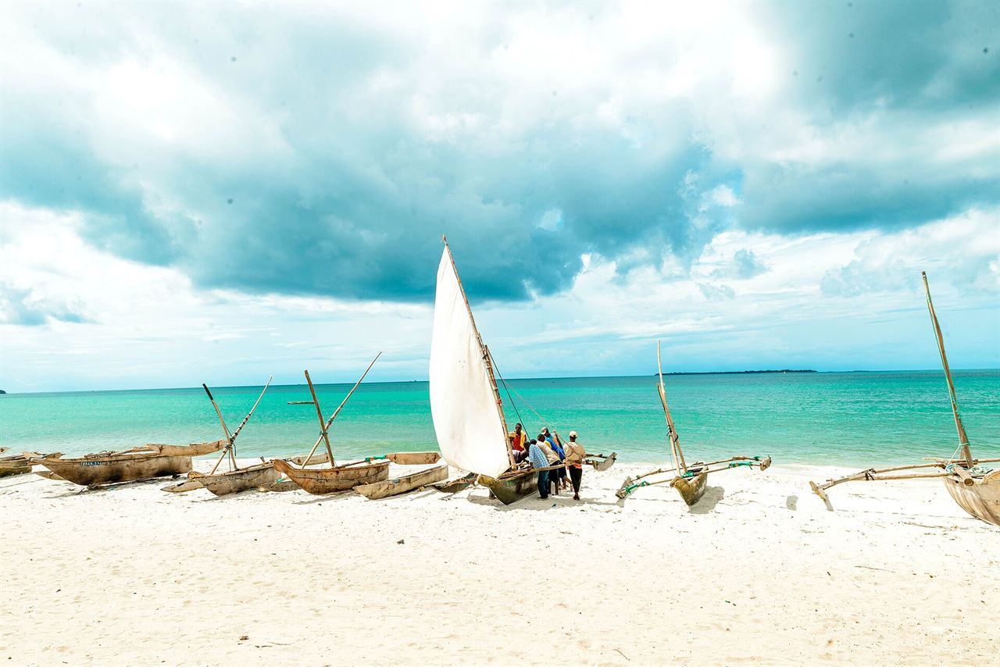

Around 1100 CE, in the granite hills of the Zimbabwe plateau, African masons raised the largest stone structures in sub-Saharan Africa — without a drop of mortar. Its gold reached the Indian Ocean. Then a colonial myth tried to take the city away from its builders.
Great Zimbabwe is not a ruin you merely look at. It is an argument — about who built cities, who traded across oceans, and who gets to be called civilised. For nearly a century, that argument was answered with a lie. This is the story, in five movements, of the stone city that refused to be erased.
Long before Europeans drew a single border, the highlands between the Zambezi and Limpopo rivers held farmers, cattle-keepers and gold-workers. The ancestors of the Shona-speaking peoples built a society of villages and chiefdoms, then a kingdom — and gave its capital a name that stayed: dzimbabwe, "houses of stone".
It emerged in the tradition of earlier southern African states such as Mapungubwe (c. 1075–1220 CE) in the Limpopo valley, whose royal graves yielded goldwork of extraordinary skill. When Mapungubwe's fortunes faded, the centre of gravity shifted north to the plateau. By the 13th century, Great Zimbabwe was the capital of a powerful polity: the Kingdom of Zimbabwe.
Its power rested on three things the wider world wanted — gold, ivory and cattle — and on control of the routes that carried them to the coast. At its height the city is estimated to have held several thousand people, and perhaps far more, making it one of the largest settlements in pre-colonial southern Africa.

The builders used no mortar. They stacked shaped blocks of local granite so precisely that walls up to eleven metres high have stood for seven centuries. The centrepiece, the Great Enclosure, is the largest ancient stone structure in sub-Saharan Africa, its outer wall running roughly 250 metres around.
Inside stands the mysterious conical tower. What it meant, no one can say for certain — a granary, a ritual centre, a symbol of the king's authority. Around it, courses of stone carry reserved bands of pattern: chevrons, herringbone and checkwork found nowhere else in the city. They were not decoration but signalling — the architecture of power.
Beyond the Great Enclosure lie the Hill Complex, where the ruler likely held court and rituals, and the valley ruins that housed the wider population. The whole city was a single, planned statement: this was a capital.
“No European is responsible for it… the buildings are wholly of African workmanship.” — David Randall-MacIver, 1906
Great Zimbabwe sat at one end of a trade route that reached across the Indian Ocean. Gold and ivory from the interior were carried east to the port of Sofala, where Swahili merchants traded them onward through a network that reached the Swahili coast, Arabia, Persia, India and — crucially — China.
The evidence is dug from the ground. Excavations at Great Zimbabwe have recovered Chinese celadon and porcelain, Persian ceramics, glass beads, brass and copper, and coins of the Islamic world. These are not ornaments from a distant curiosity; they are the receipts of a global economy. The prosperity of the Swahili city-state of Kilwa rested in large part on the gold that flowed from the plateau — gold that, in the tombstones and chronicles of the coast, was known simply as the wealth of Sofala.
The gold rhinoceros of Mapungubwe — a foil-covered figure from an earlier royal grave — shows that the gold-working tradition on this trade route was already centuries old when Great Zimbabwe rose. This was not a continent on the edge of history. It was, from the Indian Ocean's point of view, one of its workshops.

Among the city's most striking works are the Zimbabwe Birds: a series of soapstone statues of a bird — most likely a fish eagle or bateleur — each perched on a tall carved monolith. They were set on walls and pedestals inside the sacred Eastern Enclosure, almost certainly as emblems of royal or ancestral power.
The bird became the enduring symbol of the land itself. When Zimbabwe won its independence in 1980, the soapstone bird was placed at the centre of the national flag and the coat of arms — an ancient emblem reborn as a modern nation's signature.
But the originals were scattered. Carried off during the colonial occupation, several were removed to South Africa. Five of them were repatriated to Zimbabwe in 1981, a year after independence. The return of the birds was more than the recovery of sculpture; it was the recovery of a name.
When Cecil Rhodes' British South Africa Company seized the region in the 1890s, its officials faced a problem in stone. Here was a sophisticated city that pre-dated their arrival — proof, on the ground, of African achievement. The colonial answer was to deny it.
A myth was manufactured: that Great Zimbabwe was the work of foreigners — Phoenicians, Arabs, or the Queen of Sheba's people — a "lost city" of a vanished race, never African at all. The claim had a purpose. If Africans had built cities, then they had rights, history and sovereignty. If they had not, colonial rule could be sold as bringing civilisation to an empty land.
Sites were looted for gold. Soapstone birds and other finds were shipped away as trophies. The company pressed its own favoured excavators, and critics of the myth found their work suppressed. In 1905, the archaeologist David Randall-MacIver examined the ruins and concluded they were medieval and African. In 1929, Gertrude Caton-Thompson led excavations and confirmed it: the builders were the ancestors of today's Shona peoples. The lie had met its evidence.
“Great Zimbabwe was built by Phoenicians, Arabs or the Queen of Sheba — a vanished non-African race.” Promoted by the BSAC and its allies to deny African achievement and justify conquest.
A medieval African state built it in the 11th–15th centuries. Randall-MacIver (1905), Caton-Thompson (1929) and a century of subsequent archaeology agree: it is a Shona achievement.
In 1986, Great Zimbabwe was inscribed as a UNESCO World Heritage Site — a monument "of outstanding universal value". Today the name is carried by an entire nation. The stone walls that Rhodes' men tried to reassign to foreigners are the foundations of the country's identity.
The deeper lesson reaches past one city. Great Zimbabwe is the clearest answer to the idea that African history began with colonisation. Great cities, long-distance trade, gold economies and writing-like symbols all existed here for centuries before a European ship appeared. What was called a "lost city" was never lost at all. It was hidden — and then found again, by the people who built it.
A mediaeval African kingdom built the biggest stone city in sub-Saharan Africa, sent its gold across the Indian Ocean, and outlasted a century of colonial denial to become the symbol of a free nation.
A predecessor state in the Limpopo valley; its royal graves hold the gold rhinoceros.
The plateau settlement becomes the capital of a kingdom built on cattle, ivory and gold.
The Great Enclosure and conical tower are built; the city's population swells.
Chinese porcelain, Persian ceramics and Islamic coins show trade reaching across the Indian Ocean.
Great Zimbabwe is abandoned as trade routes shift north; successor states such as Mutapa rise.
Karl Mauch claims the city was the Queen of Sheba's — igniting a colonial fantasy.
J. T. Bent excavates and backs a “foreign” origin; the site is stripped of finds.
David Randall-MacIver concludes the ruins are medieval and African.
Gertrude Caton-Thompson's excavations prove a Shona (Bantu) origin.
Five Zimbabwe Birds are repatriated a year after independence.
Great Zimbabwe is inscribed as a UNESCO World Heritage Site.
Figures for population and gold exports are estimates and are presented as such. The archaeological consensus on the city's African origin is settled and documented.